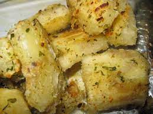

Roasted Cassava

If you want a different starch to replace potato, you should consider roasting cassava. It is one of those overlooked root vegetables worth discovering if you have not cooked it before.
Ingredients
- 1 cassava root, about 8-10 inches long
- tablespoon kosher salt
- pot of water
- 2 dried chili peppers
- 1 tablespoon cloves
- 3-4 tablespoons olive oil
- 1-2 tablespoons mixed spices including sumac, ground annatto seed, cumin, black pepper and clove
- 1 tablespoon chopped scallions
- sprigs of cilantro
Instruction
- Cut off the ends of the root. Cut or peel off all the waxed brown skin to expose just the white interior of the root. Cut the round white root into inch long segments.
- Place these in a pot and cover with water. Add salt, chili peppers and cloves. Boil until the root softens and begins to turn translucent, about an hour.
- Remove the cooked cassava pieces. Break them apart further and remove the central rope-like bits. Coat the cassava pieces generously with olive oil. Spread them out on a parchment lined baking sheet. Sprinkle with your choice of spices.
- Bake in a 350 degree oven for 20 minutes. Turn the pieces over to make sure they are not drying out. Add a bit more olive oil if needed. Finish roasting for about another 10 minutes. Serve hot with garnished of scallions and cilantro.